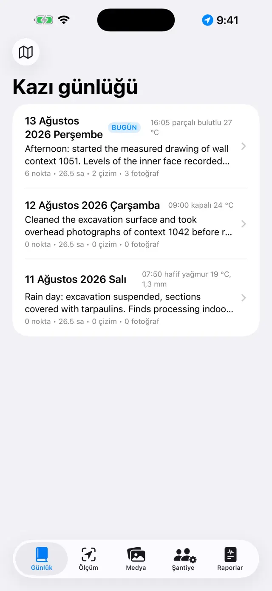
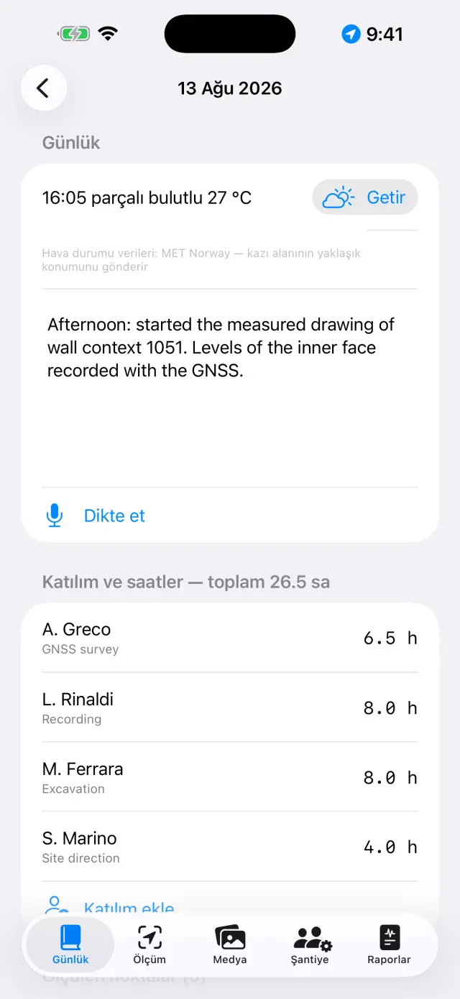
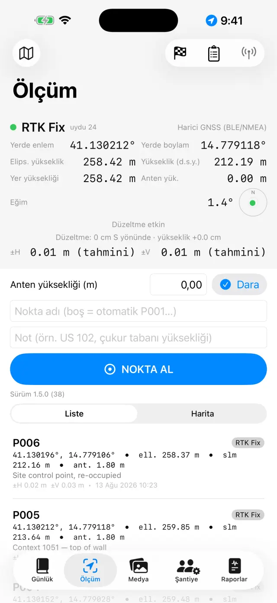
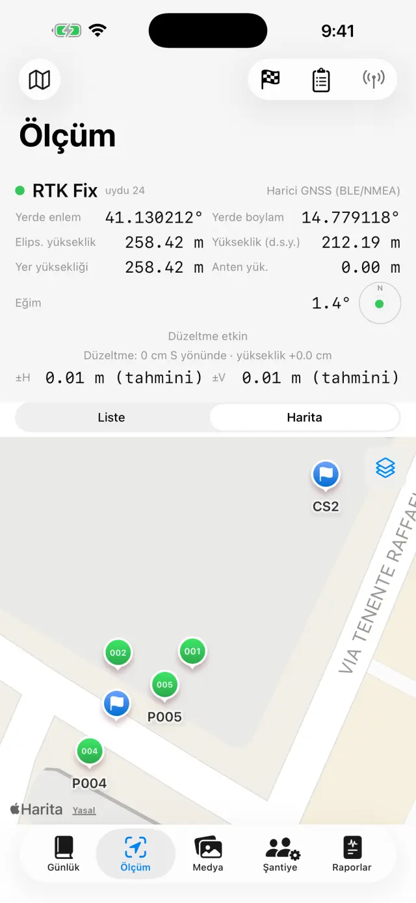
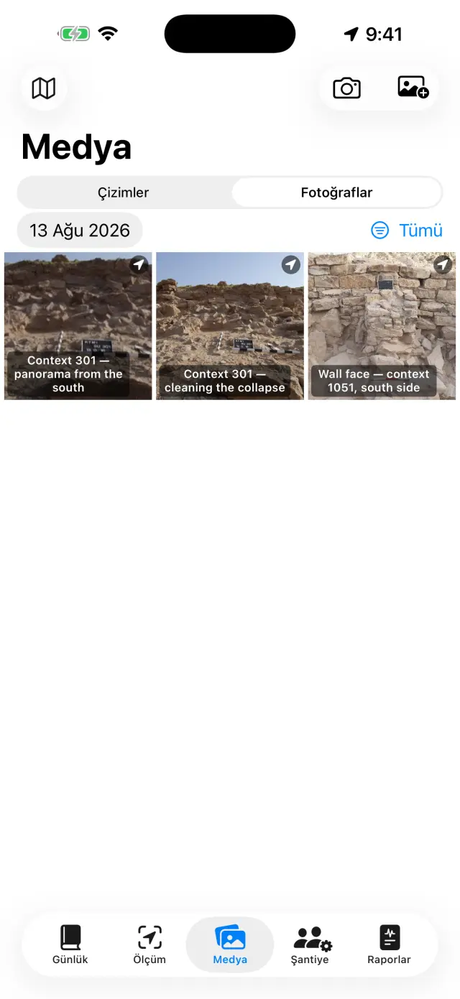
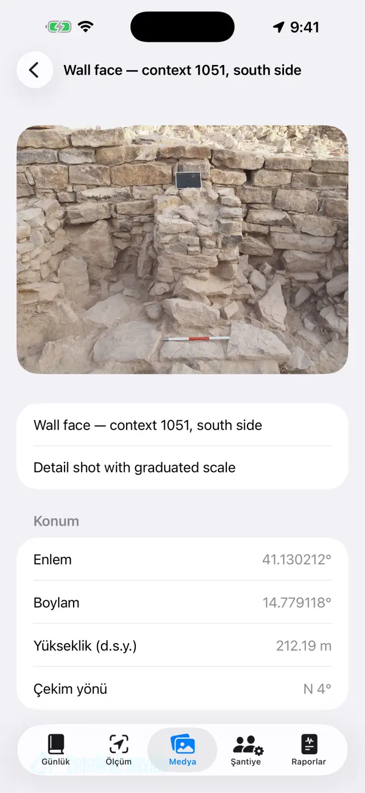
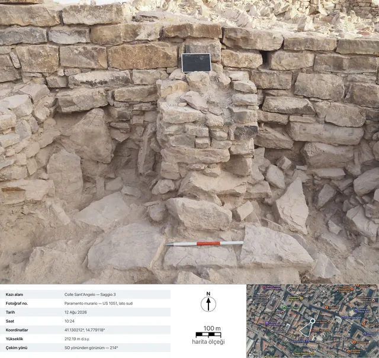
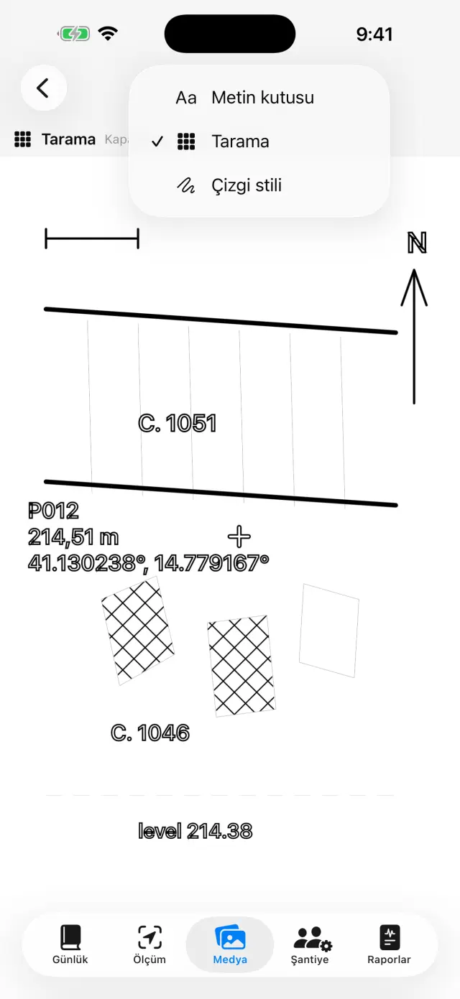
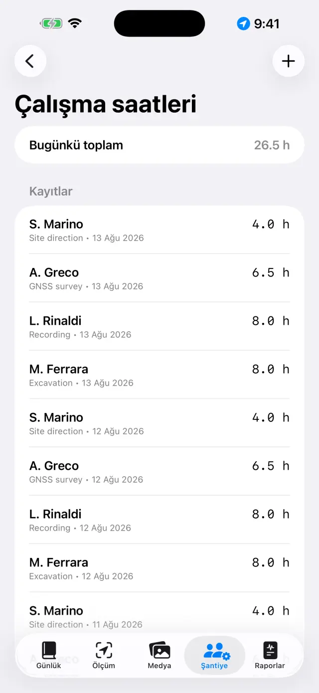
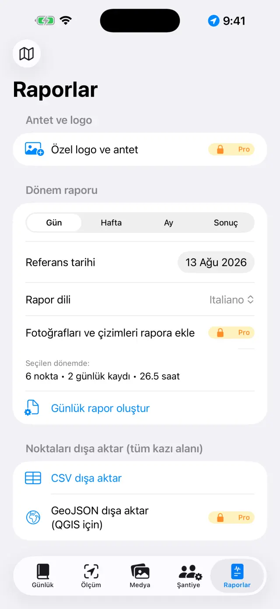

iPhone ve iPad için dijital kazı günlüğü. %100 çevrimdışı: verileriniz cihazınızda kalır.
📱 Android: uygulamayı indirin (APK, ücretsiz). İlk seferde Android, Chrome veya Dosyalar'dan yüklemeye izin vermenizi ister; sonrasında güncellemeleri uygulama kendisi önerir.
❤️ Projeyi destekleyin — Giornale di Scavo ücretsizdir, reklamsız ve aboneliksizdir; onu boş zamanlarımda geliştiriyorum. Kazıda işinize yarıyorsa, geliştirilmesini bir bağışla destekleyebilirsiniz.
Tek bir fikir var: her kazı günü bir sayfadır ve kendi
kendini doldurur. Sen her şeyi olduğu yerde kaydedersin — Ölçüm'de bir GNSS
noktası, Medya'da bir fotoğraf, Şantiye'de saatler — ve Günlük'teki
o günün sayfası hepsini kendiliğinden toplar. Hafta sonunda ya da kazının
sonunda raporlar bu sayfalardan kendi kendine oluşur.
Tipik bir gün
SabahGünün sayfasını aç, havayı ve günlüğü yaz (Dikte et ile sesli de olur)
KatılımŞantiye'de kimin geldiğini ve saatlerini kaydet
ÖlçümGNSS noktalarını al; RTK kullanıyorsan önce bir röperi kontrol et
AkşamRaporlar sekmesinden günlük raporu oluştur: gönderilmeye hazır PDF
İlk adımlar
İlk açılışta hazır bir örnek kazı alanı bulursun. Kendi alanını oluşturmak
için yukarıdaki kazı alanı adına dokun (🗺 simgesi) →
Yeni kazı alanı… ve bir ad ver (örn. “Colle Sant'Angelo —
Sondaj 3”).
Etkin kazı alanının adı her zaman yukarıda görünür: bütün sekmeler o alanın
verilerini gösterir. Alan değiştirmek için ada yeniden dokun: liste
“Kazı alanlarınız” başlığının altındadır ve Kazı alanını yeniden adlandır… ile bir adı hiçbir şey kaybetmeden düzeltirsin.
Sayfasını açmak için bir güne dokun: o günün günlüğü, havası, katılımları,
noktaları, fotoğrafları ve çizimleri zaten oradadır.
Günlüğü yaz ya da Dikte et'e dokunup konuş: yazıya dökme cihazda
olur, ağ olmadan da çalışır.
Hava elle yazılabilir (örn. “Açık, 28 °C, hafif rüzgâr”) ya da
Getir ile alınır: bu düğme o anki koşulları Norveç meteoroloji
servisine sorar. Ağ gerekir ve yalnızca bugünün sayfasında çalışır: dünün
havası artık geri getirilemez. Öğleden sonra ikinci bir dokunuş bir ölçüm daha
ekler. Elle yazdığın her zaman üstün gelir.
Getirirken cihazdan yalnızca yaklaşık 11 metreye yuvarlanmış bölge konumu
çıkar; raporlarda satır raporun dilinde görünür.

Günlerin listesi

Bir günün sayfası
🧱 SB — stratigrafik birim kartları
Her stratigrafik birim için bir kart, SB’ler arasındaki ilişkiler de bağlantı
olarak kayıtlı: belgelemenin SB kartları ve Harris matrisi buradan çıkar.
SB sekmesinde +’ya dokun: uygulama sıradaki numarayı
önerir (değiştirebilirsin) ve türü ile tanımı sorar. Numara kazı alanında
tektir; sonradan Değiştir ile değiştirirsin ve o geliş yerini taşıyan
kasalar da onu izler.
Kart; tanımlamayı (tür, alt tür, tanım, alan ya da sektör, plankare, açma,
kazı yöntemi: elle, makineyle ya da belgelenip kazılmayan SB’ler için
Kazılmadı), boyutları ve yükseklikleri (uzunluk, genişlik, kalınlık,
en düşük ve en yüksek kot), betimlemeyi (renk, Munsell, tortu türü, sertlik,
bileşenler, dolgunun yapısı ve üç evet/hayır sorusu: Mühürlü,
Yüzey aşınması, Biyotürbasyon), mevcut buluntuları, yorumu
(etkinlik, evre, tarihleme, tarihleyici öğeler), açılış ve kapanış tarihlerini ve
sorumluyu toplar. Sen yazarken kendiliğinden kaydedilir. En altta, başlığında,
adında ya da notunda SB’yi anan fotoğrafları ve ölçüm noktalarını da bulursun
(“SB 102 kuzeyden”).
Tanım, renk, tortu türü, sertlik, bileşenler, mevcut buluntular, yorum,
etkinlik ve tarihlemenin yanında eş anlamlılar sözlüğü düğmesi
(küçük kitap) vardır: standart sözcük dağarcığından ya da kendi terimlerinden
seçersin, ve kart kazan herkes arasında tutarlı kalır. Bileşenlerde ve
buluntularda birden fazlası seçilir. Aradığın sözcük yoksa sayfa onu eklemeyi
önerir. Kendi terimlerin bütün kazı alanlarında geçerlidir ve SB sekmesinin ⋯
menüsündeki Eş anlamlılar sözlüğü’nden yönetilir. Orada
Kazı alanının kronolojisi da seçilir: Akdeniz ya da
Arap Körfezi (DCT); ikincisinde DCT kartının dönemleri (Hafit, Umm
an-Nar, Wadi Suq…) tarihlemede önerilir.
İlişki ekle: ilişkiyi seç (örter, keser, doldurur, dayanır,
bağlantılı, aynı ve bunların tersleri) ve öbür SB’nin numarasını yaz. İlişki
yalnızca bir kez kaydedilir ve öbür kartta ters çevrilmiş olarak görünür: 101,
102’yi örtüyorsa 102’de “101 tarafından örtülür” okursun. Öbür SB’nin henüz kartı
yoksa boş olarak oluşturulur. Önceden kaydedilmiş sırayla çelişen bir ilişki,
açıklamasıyla birlikte reddedilir.
Buluntular bölümü, geliş yeri SB’yi anan kasaları gösterir (“SB 102”,
“DSB 12”): elle bağlanacak bir şey yoktur. Buluntu ekle, geliş yeri
önceden yazılmış buluntu fişini açar.
⋯ menüsünden Harris matrisi sırayı ilişkilerden çizer: en geç SB
en üstte, aynı ya da bağlantılı SB’ler tek bir kutuda, kesikler kesik çizgili,
duvar SB’leri gri zemin üzerinde. İki parmakla büyütülür ve görüntü olarak
paylaşılır.
Basılı kart: bir kartın içinde, üstteki paylaş düğmesi
Form PDF olarak ve Form DOCX (Word) olarak seçeneklerini
sunar; listenin ⋯ menüsünden Tüm formlar PDF olarak ve
Tüm formlar DOCX (Word) olarak, kazı alanının bütün SB’lerini her
sayfaya bir tane olmak üzere tek bir dosyada toplar. Arşiv formudur: alanlarla
tablolar, ilişkiler, buluntular, raporun logoları ve anteti, raporlar için
seçilen dilde.
Survey123 / DCT: CSV dışa aktar (DCT SB formu),
DCT kartının Survey123 formuyla aynı sütunları ve aynı kodları taşıyan, teslim
etmeye ya da yüklemeye hazır bir CSV yazar.
CSV içe aktar (DCT SB formu)… tersini yapar: Survey123’ten (ya da
uygulamadan) dışa aktarılmış bir CSV’yi okur ve kartları ilişkileriyle birlikte
oluşturur. Kazı alanında zaten kartı olan SB’ler olduğu gibi kalır ve sonunda
uygulama kaç kart ve kaç ilişki eklediğini söyler. Dosyada Körfez dönemleri
varsa kazı alanının kronolojisi Arap Körfezi (DCT) olur.
📍 Ölçüm
Yukarıdaki pano canlı konumu gösterir: koordinatlar, yükseklikler, duyarlık
ve çözüm türü (GPS / RTK Float / RTK Fix).
Çubuk kullanıyorsan Anten yüksekliği (m) değerini gir: noktanın
yüksekliği kendiliğinden yere indirilir.
NOKTA AL'a dokun. Ad otomatik ilerler (P001, P002…) ama kendi
adını da yazabilirsin (örn. “US 102 — çukur tabanı”) ve bir not
ekleyebilirsin.
Noktaları yerinde görmek için Liste ile Harita
arasında geçiş yap; haritadan kadastroyu ya da başka bir WMS servisini
açabilirsin.
Röperlerin (🏁) kendi bölümü vardır: CSV'den içe aktar ya da oluştur, sonra
Anlık kontrol'ü aç ve ölçmeye başlamadan önce, uç demiri çivinin
üzerindeyken ΔKuzey/ΔDoğu/ΔYükseklik farklarını denetle.
Nivelman defterleri altında optik nivo için saha defteri vardır:
istasyonlar, geri ve ileri okumalar, bir başlangıç röperinden hesaplanan
yükseklikler ve kapanma kontrolü. Nivelmanla bulunan noktalar, GNSS noktaları
gibi kendi yükseklikleriyle kazı alanına girer.
LiDAR tarayıcısı olan cihazlarda (12'den itibaren
iPhone Pro, iPad Pro) 3D Ölçüm görünür:
yüzey yeniden oluşana kadar yavaşça gez, sonra ölçmek istediğin iki noktaya
dokun ve mesafeyi, yatay mesafeyi ve yükseklik farkını oku.
Röpere bağla ile yüksekliği bilinen bir röper seçip onun
yerdeki noktasına dokunursun: o andan sonra her ölçüm iki ucun d.s.y.
yüksekliğini de taşır. Sabitle ölçümü sahnede tutar,
Ölçümü iptal et onu atar, Günlüğe aktar ondan,
onaylamadan önce düzelttiğin bir metin yapar. Bu optik bir ölçümdür ve uygulama
bunu “LiDAR ±cm” yazarak açıkça söyler: bir yükseklik farkı ya da yerinde
çabucak alınmış bir uzunluk için işe yarar, ve ne GNSS'in ne de nivonun yerini
tutar. Tarayıcısı olmayan cihazlarda düğme hiç yoktur.
Panonun altında NMEA kayıtları yer alır: harici alıcının
ham akışı kendiliğinden dosyaya yazılır — kayıt
anteni açtığında başlar, kapattığında kapanır; senin bunu hatırlaman gerekmez.
Kuşkulu bir günü yeniden okumak ya da ham veriyi son işlemeyi yapacak kişiye
vermek için işe yarar. Dosyalar paylaşılır ve silinir, yalnızca sürmekte olan
kayıt dışında; liste alıcı kapalıyken de açılır, böylece dünkü dosyalar
erişilebilir kalır.

Ölçüm sekmesinin GNSS panosu

Haritada noktalar ve röperler
Her nokta iki yüksekliği birden saklar:
elipsoidal ve ortometrik (d.s.y.). Telefonun dahili GPS'iyle d.s.y. yüksekliği
bulunmayabilir: harici bir alıcı gerekir (aşağıya bak).
📷 Medya
Kamera düğmesiyle çek ya da fotoğraf kitaplığından içe aktar.
Fotoğraflar sırayla adlandırılır (F001, F002…) ve son GNSS konumuyla
coğrafi olarak etiketlenir.
Çekimde uygulama pusuladan çekim yönünü de kaydeder:
fotoğrafın ayrıntısında ve raporlarda “SO yönünden görünüm — 214°” yazar; tam
tepeden çekilen kareler için (plan, bir US'nin tabanı) üst kenarın yönüyle
birlikte düşey çekim ibaresi çıkar. Pusula etkileniyorsa uygulama bunu
söyler.
Başlık ve notlar için bir fotoğrafa dokun (örn. “US 102 kuzeyden”).
Fotoğraf fişini paylaşfotoğraf belgeleme fişini üretir: fotoğrafın altında çekim
verileri (kazı alanı, numara, tarih ve saat, koordinatlar, yükseklik, yön),
iğnesi ve çekim konisiyle bir uydu görüntüsü, haritanın ölçek çubuğu ve kuzey
oku. Harita ağ ister: ağ yoksa fiş yine çıkar, veri paneli genişletilmiş
olarak.
Sanal ölçek sahada yanında olmayan referansları fotoğrafın
üzerine koyar. Önce Fotoğrafı kalibre et: bildiğin bir uzaklığın iki
ucuna dokunursun — cetvelin bir bölümü, bir tuğlanın kenarı — ve onu santimetre
olarak bildirirsin. Sonra gerekeni koyarsın: 5 cm cetvel,
10 cm cetvel ya da 20 cm cetvel, 50 cm mira,
1 m mira ya da 2 m mira, 10×10 cm kare,
Referans artısı ve Kuzey oku. Her öğenin kendi görünümü
(Düz şerit, Gerçek mira, Çentikli cetvel),
boyutu, kalınlığı ve dönüşü vardır; birini taşımak için
basılı tut ve sürükle — böylece yakınlaştırmak için yaptığın
hareket onu yanlışlıkla kaydırmaz.
Ölçüm ekle fotoğraf üzerinde herhangi bir uzaklığı iki dokunuşla
ölçer. Sayı hiçbir zaman saklanmaz: yeniden kalibre edersen bütün etiketler
kendiliğinden yeniden yazılır. Uygulamanın tam tepeden çektiği fotoğraflarda
kuzey oku, kaydedilmiş azimuta göre zaten dönmüş doğar ve rapor bunu belirtir;
oku sen çevirirsen ibare “beyan edilen” olur. Ölçekle paylaş
fotoğrafın üzerine koyduklarınla birlikte bir kopyasını çıkarır —
Fotoğrafı paylaş ise EXIF'iyle çıplak özgün dosya olarak kalır.
Seri işle (Medya'da
yukarıdaki menü) kitaplıktan bir grup fotoğraf alır ve hepsini birbiri ardına
say ve ölç işleminden geçirir: her fotoğraf, çekim tarihiyle kazı alanının bir fotoğrafı
olur ve her birinin onaylayacağın yeni bir buluntu fişi olur.
Seri boyunca ekran açık kalır. Çıkarsan ya da yarıda kesersen hazır olan
fotoğraflar taslakta kalır ve Seriye devam et kaldığı yerden sürer.
Sonunda gözden geçirme fişleri tek tek önüne getirir: geliş yerini, türü ve
miktarı düzeltir ve onaylarsın.

Fotoğraf galerisi

Bir fotoğrafın ayrıntısı: koordinatlar, yükseklik ve çekim yönü

Dışa aktarılan fiş: çekim verileri, çekim konisiyle uydu görüntüsü, haritanın ölçek çubuğu ve kuzey oku
🧮 Say ve ölç (Medya içinde)
Yukarıdan fotoğraflanmış bir parça tepsisi, ve onları kendi kendine sayıp
ölçen bir uygulama. Bir buluntu fotoğrafı üzerinde yaşar:
fotoğrafı fişinden açar ve Say ve ölç
düğmesine dokunursun.
Önce ölçek. Uygulama fotoğraftaki metrik çubuğu kendi
arar: bulursa kaç kare okuduğunu söyler, bir karenin kaç santimetre olduğunu
(1, 2, 5 ya da 10 cm) sen bildirirsin ve Öneriyi kullan'a
dokunursun. Bulamazsa bilinen bir uzaklığın iki ucuna elle dokunursun.
Kalibre etme'yi de seçebilirsin: o zaman yalnızca sayılır ve
uygulama ölçülerin olmadığını yazar — onları uydurmaz.
Model fotoğraftaki bütün şekillerin konturunu çıkarır: birkaç on saniye
sürebilir. Çıkan şey bir öneridir, bir sonuç değil: bir dokunuş
bir şekli dışarıda bırakır, bir dokunuş daha onu geri alır.
Birleştir ikiye ayrılmış aynı parçanın iki şeklini tek bir şekle
indirir; Bir alana sınırla tepsinin çevresini parmakla çizdirir ve
arama orada kalır; İnce geçiş yalnızca hiçbir şey bulunmamış yerleri
yeniden tarar. Şüpheliler — arka plana, örtüye, gölgeye
benzeyen şekiller — bir arada toplanır ve tek hamlede dışarıda bırakılır.
Şeklin malzemesi ile bir parçaya dokunur ve ne olduğunu
söylersin; Tümü için malzeme onu hepsine birden verir, ya da yalnızca
boş kalanlara. Malzemeyi öner cihazdaki modelden bunu tahmin etmesini
ister: doğrulanacak bir öneridir, ve senin seçimin her zaman üstün gelir.
İleri metni hazır yazılmış onay sayfasını açar: sayım, ölçüler
(sırayla büyük kenar × küçük kenar) ve dürüst bildirimler — bir şekil kendini
ölçtürmediğinde “bunlardan N güvenilir ölçüsü yok”. Fotoğrafta bir
etiket varsa uygulama onu okumayı dener ve sonucu her zaman
söyler: ya “Okunan etiket: …”, ya “Fotoğrafta okunabilir metin yok”.
Seçenekler yalnızca doldurulacak boş bir yer varsa görünür:
Sayımı miktar olarak kullan, Kod olarak kullan,
Geliş yeri olarak kullan. Senin yazdığının üzerine hiçbir zaman
yazılmaz, ve notlar uzar: ikinci bir tur birincinin ardına
eklenir, onun yerine geçmez. Metin düzenlenebilir: notlara orada okuduğun
girer.
Sonra, fotoğrafın ayrıntısında Şekillerdeki numaralar küçük
numaraları gösterir ya da gizler — ve onları orada nasıl görüyorsan
paylaşımlarda ve raporlarda da öyle çıkarlar. Bir şeklin kim olduğunu öğrenmek
için ona dokun: “7: 4,2×2,8 cm”. Fotoğraf kalibre değilse etiket bir sayı
vermek yerine bunu söyler.
Ölçü, kalibre ettiğin iki noktanın
düzleminde geçerlidir: fotoğraf tam tepeden, tepsi sensöre
paralel olacak şekilde çekilmelidir. Bildirilen referans, iyi kadrajlanmış
parçalarda ±2 mm'dir; dik duran ya da fotoğrafın kenarında kalan bir parça bu
anlaşmanın dışındadır.
✏️ Çizimler (Medya içinde)
Yeni bir tabaka oluştur ve arka plan olarak kazı alanının bir fotoğrafını
seç: dijital “aydıngerin” budur. Bir çizim birden çok güne yayılabilir.
Fotoğrafı hiç koymayabilirsin de: beyaz aydıngerin üzerine de aynı şekilde
çizilir.
Tabakaları, kesikleri ve taşları parmakla ya da Apple Pencil ile çiz.
Yakınlaştırmak için parmaklarını aç (6× kadar; 1×'e dönmek
için iki parmakla çift dokunuş). Fotoğraf çizgini örtüyorsa kamera menüsünden
Arka plan opaklığı…'nı seç ve %5 ile %100 arasında istediğin yere
getir: solan fotoğraftır, çizim değil. Bu seçim tabakada kalır ve PDF, DOCX,
PNG ile Lejantla dışa aktar için de geçerlidir.
Geri kalan her şey Araçlar altındadır (çubuktaki İngiliz
anahtarı); orası yedi kipin dizinidir: Metin kutusu, Çizgi çıkarma, Fotoğraf ölçeği,
Yükseklikli nokta, Tarama, Çizgi stili ve
Sanal ölçek. Aynı
anda yalnızca biri açık kalır: onay işareti hangisi olduğunu
söyler ve o açıkken parmak çizmez, o aracı yönetir — çizmeye dönmek için
işaretli satıra yeniden dokun. Görüntü üzerinde çalışan üç satır (çizgi çıkarma,
ölçek, yükseklikli nokta) yalnızca bir arka plan fotoğrafı varsa görünür.
Metin kutusu ile etiketleri koy (örn. “US 1002”): taşınır,
parmakla boyutlandırılır ve dört yazı tipi arasından seçilir.
Çizgi çıkarma dokunduğun nesnenin
(bir taş, bir tabakanın sınırı) konturunu tanır ve çizgiye dönüştürür: renk,
kalınlık ve çizgi stili kipten çıkmadan değiştirilir, konturlar da basamaklı
değil pürüzsüz çıkar. Her şey cihazda olur, ağ gerekmez.
Çizgi çıkarmanın içinde Tümünü çıkar
bütün fotoğrafı kendi başına dolaşır. Başlangıç sayfasında görünümü seçersin —
Yalnızca konturlar ya da bir tarama ve istersen bir Renk katmanı — ve Başlat'a basarsın: çubuk nerede olduğunu söyler ve
birkaç on saniye sürer. Çıkan şey bir önizlemedir, çizim değil:
bir biçimin içine dokunmak onu dışarıda bırakır, bir dokunuş daha geri alır (üst
üste binen biçimler arasında parmağın altındaki en küçüğü kazanır), İnce geçiş yalnızca hiçbir şeyin bulunamadığı yerleri yeniden tarar ve
Uygula kalanı çizime aktarır. Sen uygulamadıkça tabakaya
dokunulmaz.
Fotoğraf ölçeği aracıyla (cetvel) bilinen bir ölçünün iki ucuna
dokunursun — jalonun bir bölümüne — ve gerçek uzaklığı yazarsın: fotoğraf
ölçeğini kazanır, o andan sonra dışa aktarmalar metre konuşur.
Yükseklikli nokta ile kazı alanındaki bir GNSS noktasının (ya da
elle yazılmış bir noktanın) artı işaretini fotoğrafa koyarsın: ad, yükseklik ve
koordinatlar, kılavuz çizgili ve sürüklenebilir bir etikette görünür. Değerler
çizimi örttüğünde, seçili etiket üzerinde parmaklarını açıp kapayarak onu
küçültür ya da büyütürsün.
Tarama biçimleri doldurur: kapalı bir biçimin
içine dokunursun ve orası dolar. On adet geleneksel tarama
vardır — Duvar örgüsü / taş, Tuğla, Harç / sıva,
Kil, Silt, Kum, Çakıl,
Kömür / kül, Ana kaya, Ahşap — bir de
Renk katmanı (kendi opaklığı olan bir renk); tek başlarına ya da
birlikte. Bir biçim bir başkasının içindeyse parmağın altındaki en küçüğü
kazanır; Dolguyu kaldır onu temizler. Fotoğraf gerekmez: dolgu
çizilen biçimler üzerinde çalışır, bu yüzden beyaz aydıngerde de işler.
Çizgi stiliçizilmiş bir çizgiyi giydirir: ona
dokunursun ve Sürekli, Kesikli, Noktalı,
Çizgi-nokta arasından seçersin, kalınlığı da ayarlarsın. Bu stille çiz sonraki çizgilerin doğrudan giydirilmiş doğmasını sağlar;
Stili kaldır çizgiyi düz hâline döndürür. Bu bir ekran efekti
değildir: kesikler gerçek parçalardır ve PDF, DOCX, PNG, SVG ile DXF'te de öyle
kalır.
Sanal ölçek fotoğraflardaki aynı referansları tabakaya da
taşır: cetvel, mira, kare, artı, kuzey oku ve iki dokunuşluk ölçüler. Metrik
türler tabakanın bir ölçeği olmasını ister, yani Fotoğraf ölçeği'ni:
bilinen bir uzaklık olmadan uygulama çizmek yerine açıklama yapar. SVG ile
DXF'te bu öğeler kendi katmanlarında
vektör olarak çıkar, ve CBS'nin cetveliyle okunan ölçü
etiketle çakışır.
Lejantla dışa aktar: görüntü altında
beyaz bir şeritle çıkar — metrik ölçek çubuğu (ölçek varsa), tam tepeden
çekilmiş fotoğraflar için kuzey oku, cepheden çekilenler için “… yönünden
görünüm”.
Vektörel dışa aktar: çizim için SVG
ya da CBS için DXF. Tam tepeden çekilmiş bir fotoğrafta
koordinatlı en az iki yükseklikli nokta varsa DXF UTM'de coğrafi
referanslı çıkar ve QGIS'te kendiliğinden dünya üzerine oturur;
yalnızca ölçek varsa yerel metre biriminde çıkar; ikisi de yoksa uygulama bunu
söyler ve birimsiz bir dosya üretmez. Opaklık konusunda SVG bir istisnadır:
özgün fotoğrafı olduğu gibi içine gömer, bu yüzden soluklaştırılmış arka plan
orada tam güçle çıkar.
Bitirdiğinde fotoğrafı gizle: geriye rapora hazır, temiz çizim kalır.

Dijital aydınger
👷 Şantiye
Günün katılımlarını kaydet: her kişinin adı, görevi ve saatleri.
Ekipman envanterini ve kime atandıklarını tut.
Buluntular altında kazıdan çıkanların kaydı vardır; adının
altında kayıtlı satır sayısı yazar.

Katılım ve saatler
📦 Buluntular (Şantiye içinde)
Asıl an fotoğraf makinesinin anı değildir: gün sonunda kasalar önünde
oturup, yorgun ve elleri kirli, onları birer birer kaydetmenin anıdır.
Buradaki
her şey o an için yapılmıştır.
Şantiye → Buluntular → +. Fiş, bugünün
tarihiyle ve en son kullanılan geliş yeriyle açılır: ikinci
satırdan sonra kaydetmek neredeyse yalnızca dokunmaktır. Alan, o kazı alanında
daha önce kullanılmış geliş yerlerini önerir.
Alanlar gerçekten doldurulduğu sıradadır: Geliş yeri
(örn. “US 102”), Tür, Miktar ve onun
Birim'i (parça, adet, poşet, kasa, gram), kasanın ya da poşetin
kodu, Durum (Yıkanacak, Yıkandı,
Etiketlendi, Teslim edildi), notlar ve tarih.
Önerilen türler on bir tanedir — Seramik, Tuğla,
Hayvan kemiği, İnsan kemiği, Metal,
Cam, Taş aletler, Harç ve sıva,
Ahşap, Örnekler, Diğer — ama kendi türünü de
yazabilirsin (“Boyalı sıva”): o sözcük her dilde olduğu gibi kalır, çünkü
uygulama yalnızca kendi önerdiği seçenekleri çevirir.
Miktar boş bırakılabilir: bir satır saymadan da “bu şeyler vardı”
diyebilir, ve dışa aktarmalarda o hücre boş kalır, asla sıfır olmaz.
Fişin fotoğrafları Fotoğraf çek ile çekilir,
Kitaplıktan ya da Alandan ile alınır; sonuncusu galeride
olup da henüz bir fişi olmayan fotoğrafları getirir. Bunlar
Medya'daki fotoğrafların ta kendisidir: bir buluntuyu silmek onun
fotoğraflarını silmez, yalnızca bağlarını koparır.
Günün sayfasında Buluntular bölümü yalnızca o gün kayıt
yaptıysan görünür. Günlüğe aktar geliş yerine göre gruplanmış,
notları eksiksiz özet satırını önerir: onu düzeltir ve günlüğün sonuna
eklersin. İki kez basınca iki kez yazar — günlük hiçbir zaman kendi kendini
yeniden yazmaz.
📄 Raporlar
Türü seç: günlük,
haftalık, aylık ya da eksiksiz ekleriyle
sonuç raporu.
Rapor dilini on yedi dil arasından seç; uygulamanın
dilinden bağımsızdır: uygulamayı Türkçe kullanırken rapor Almanca
çıkabilir.
PDF oluştur ya da logolar ve fotoğraflarla DOCX,
noktaların CSV'sini, QGIS için GeoJSON dışa
aktar.
Antet ve logolar’da anteti yaz ve bir ya da birkaç logo seç
(Kurum logosunu seç, sonra Başka bir logo ekle): bütün
raporların ve SB kartlarının başında, listedeki sırayla çıkarlar; sırayı
Öne taşı oklarıyla değiştirirsin.
En altta
Buluntuları dışa aktar (tüm kazı alanı) vardır: hesap tablosu için
Buluntu CSV'sini dışa aktar, ağ olmadan herhangi bir tarayıcıda
açılan, küçük resimli bir tablo için
Buluntu HTML'sini dışa aktar. Başlıklar, türler, birimler ve
durumlar rapor için seçilen dilde çıkar; senin yazdığın ise yazdığın gibi
kalır. Sonuç raporunda buluntuların geliş yerine göre kendi eki vardır.
SB’ler raporlara girer: günlük, haftalık ve aylık raporda dönem içinde açılıp
kapanan SB’ler; sonuç raporunda bütün kartları, Harris matrisini ve SB’lerin
özet tablosunu (numara, tür, tanım, tarihleme, örter, örtülür) içeren ek.
Raporlarda fotoğraflar açıkken Fotoğrafların yerine fotoğraf fişleri seçeneğini kullanabilirsin: her
fotoğraf, verileri ve haritasıyla eksiksiz bir belgeleme fişi olarak, raporun
dilinde PDF'e ve DOCX'e girer.

Rapor oluşturma
Harici GNSS alıcısı ve NTRIP
Harici bir alıcıyla (santimetre duyarlıklı anten) uygulama RTK duyarlığına
ulaşır. Dahili GPS her zaman yedek olarak kalır.
Alıcıyı aç ve telefonun Bluetooth'unu etkinleştir.
Ölçüm'de konum kaynağını seç: Harici GNSS (BLE/NMEA)
ve alıcını listeden seç. MFi alıcılar
ve NMEA'yı ağ üzerinden yayınlayanlar da desteklenir.
RTK düzeltmeleri için NTRIP'i ayarla: caster adresi, port,
mountpoint, kullanıcı ve parola (cihazın anahtar zincirinde kalır). Uygulama
konumu caster'a gönderir ve düzeltmeleri alır.
RTK Fix'e geçmesini bekle: santimetre duyarlığı.
Başlamadan önce bir röper üzerinde kontrol et.
Telefonun çekmediği yerlerde internetsiz bir yol
da vardır: bilinen bir noktaya kurulmuş bir baz ile bir gezici, düzeltmeleri
LoRa telsiziyle birbirine aktarır; ne caster ne SIM gerekir
(ESP32 köprülü DFRobot RTK kiti). Uygulama açısından hiçbir şey değişmez —
alıcıdan zaten düzeltilmiş NMEA gelir — köprünün kurulumu ise ayrıca kendi
README dosyasında belgelenmiştir: burası uygulamanın kılavuzu olarak kalır, bir
aygıt yazılımı el kitabı değil.
Yedekleme ve veri alışverişi
Kazı alanı menüsünden Kazı alanını dışa aktar (.zip)'a dokun:
içinde her şey var — günlük, noktalar, fotoğraflar, çizimler, saatler,
röperler, buluntular ve SB kartları.
Kazı alanı içe aktar (.zip)… kazı alanını başka bir cihazda
yeniden oluşturur, iPhone ile Android arasında bile. İçe aktarma hiçbir zaman üzerine yazmaz ve
birleştirmez: her zaman seninkilerin yanında yeni bir kazı alanı oluşturur, aynı
adlı bir alanın varsa adına “(içe aktarılmış)” eklenir.
⚠️ Kazı alanını sil… alanı bütün içeriğiyle siler ve
geri alınamaz: kuşkun varsa önce bir ZIP dışa aktar.
Ücretsiz
Giornale di Scavo ücretsiz ve eksiksizdir: bu kılavuzda
anlatılan bütün işlevler dahildir; abonelik, uygulama içi satın alma ve filigran
yoktur, kazı alanı sayısı sınırsızdır.
Sorun giderme
Bluetooth alıcı görünmüyor ya da bağlanmıyor
Sırayla denetle:
alıcı açık ve başka bir uygulamaya ya da telefona bağlı değil;
sistemin Bluetooth'u açık ve uygulamanın Bluetooth izni var
(Ayarlar → Giornale di Scavo);
Ölçüm'de seçilen kaynak Harici GNSS (BLE/NMEA);
alıcıyı kapatıp yeniden aç, sonra aramayı yinele.
Bir türlü RTK Fix'e ulaşamıyorum
Etkin bir NTRIP bağlantısı gerekir: caster'ı, mountpoint'i ve kimlik
bilgilerini denetle.
Telefonun veri kapsamasını denetle: düzeltmeler internet üzerinden gelir.
Açık gökyüzü: sık ağaçlar ve yakın duvarlar sinyali bozar. Kapsama kötüyse
RTK Float'ta (desimetre) kalabilirsin.
Yakın bir mountpoint (< 30–40 km) ya da bir VRS ağı seç.
NTRIP bağlanmıyor
Adresi ve portu (çoğu kez 2101), bir de mountpoint'in var olduğunu denetle:
çoğu caster listeyi yayımlar (sourcetable).
Yanlış kullanıcı ya da parola 401/403 hatası verir: kimlik bilgilerini
yeniden gözden geçir.
Bazı ağlar konumun gönderilmesini ister (GGA): uygulama bunu kendiliğinden
yapar, ama alıcının önce bir fix'i olmalı.
d.s.y. yüksekliği boş ya da sıfır
Telefonların dahili GPS'i yalnızca elipsoidal yükseklik verir. Ortometrik
yükseklik (d.s.y.) harici bir alıcının GGA cümlesinden gelir. Alıcı yoksa
noktalar yine de elipsoidal yüksekliği saklar.
Dikte çalışmıyor
Ayarlar'da mikrofon ve konuşma tanıma iznini denetle.
Yazıya dökme cihazda olur: ilk seferinde sistem dil modelini indirmek
zorunda kalabilir (bir kereliğine ağ gerekir, sonra çevrimdışı çalışır).
Kısa cümlelerle konuş; metin günlüğün sonuna eklenir.
Kadastro haritası (WMS) görünmüyor
Uygulama çevrimdışıdır, ama WMS katmanları web servisleridir: bir bağlantı ve
çalışan bir servis gerekir. İtalyan kadastrosu hazır gelir; başka ülkeler için
ulusal servisin WMS uç noktasını gir (EPSG:3857 desteklemelidir). Veri
kapsamasının dışında temel harita ve noktalar görünür kalır.
Fotoğrafların koordinatı yok
Fotoğraf konumunu son GNSS fix'inden alır: önce Ölçüm'ü aç ve konumun
oturmasını bekle, sonra çek. Konum izni verilmemişse fotoğraflar koordinatsız
kaydedilir.
Raporda fotoğraflar ya da logo eksik
Fotoğrafları ve çizimleri rapora ekle seçeneğinin açık olduğunu
ve Antet ve logolar’da en az bir logonun seçildiğini denetle: ikisi de
hem PDF hem DOCX için geçerlidir, logolar basılı SB kartları için de.
Yanlışlıkla bir kazı alanı sildim
Silme kesindir: veriler geri getirilemez (bulut yoktur). Daha önce dışa
aktardığın bir ZIP varsa onu içe aktararak alanı o günkü haline döndürürsün.
Öneri: gün sonunda bir ZIP dışa aktar.
“Getir” sönük, ya da “Hava durumu kullanılamıyor” diyor
düğme sönükse geçmiş bir günün sayfasındasın: hava durumu yalnızca bugünün
sayfasında getirilir;
“Hava durumu kullanılamıyor” çıkıyorsa ağ yok, ya da kazı alanında konumu
alacak bir GNSS noktası henüz yok — bir nokta al ve yeniden dene.
Fotoğraf fişi haritasız çıkıyor
Uydu görüntüsü Apple'dan gelir ve ağ ister: uygulama 15 saniyeye kadar
bekler, sonra fişi haritasız üretir (veriler ağı beklemez). Yavaş şantiye
ağlarında beklemenin tamamı gerekebilir: Wi-Fi altında yeniden dene. Fotoğrafta
coğrafi etiket yoksa harita tanımı gereği olamaz.
“Tümünü çıkar” hiçbir şey bulmuyor, ya da fazlasını buluyor
tarama arka plan fotoğrafı üzerinde çalışır: fotoğraf yoksa komut da yoktur
ve “Fotoğraf hazırlanıyor…” yazdığı sürece model henüz hazır değildir —
bekle;
biçimler azsa İnce geçiş'e bas: yalnızca ilk turun hiçbir şey
görmediği yerleri daha sık bir ızgarayla yeniden tarar ve bulduğunu ekler, senin
dışarıda bıraktıklarını geri getirmeden;
çok fazlaysa hepsini uygulama: önizlemede fazlalık biçimlere tek tek
dokunarak onları dışarıda bırak, sonra Uygula. Dışarıda bıraktığın
çizime girmez;
düz fotoğraflar — düşük karşıtlık, öğle ışığı, baştan sona aynı renkte zemin
— doğası gereği az kontur verir: orada nereye baktığını bilen tek dokunuşluk
çizgi çıkarma daha iyidir;
geriye bir sürü minik biçim kalıyorsa Yalnızca konturlar ile
yeniden dene: daha iyi okunurlar, taramayı da sonradan elle her zaman
serebilirsin.
Çizgi kendini giydirtmiyor
dokunuş, bir parmak ucu yarıçapı içindeki en yakın çizgiyi arar: çizgi
inceyse ya da kalabalıksa yakınlaştır ve tam mürekkebin
üzerine, daha kesin dokun;
yalnızca çizgiler giydirilir. Dolgular, metin kutuları ve
yükseklikli noktaların artı işaretleri çizgi değildir, parmağın altında yanıt
vermezler;
“Bu çizginin stili değiştirilemiyor” çıkıyorsa, dokunuşun topladığı çizgiler
arasında çizgi olmayan biri vardır: duran bir dokunuşun bıraktığı nokta ya da
içe aktarılmış bir arşivden bozuk gelmiş bir çizgi. Noktayı sil ve yeniden dene,
ya da çizgiye ondan uzak bir yerinden dokun. Tek başına bir nokta zaten
giydirilemez: bir noktayla kesikli çizgi yapmanın yolu yoktur;
dokunuşla Uygula arasında bir şeyi geri aldıysan ya da başka bir
şey çizdiysen, yanlış çizgiyi giydirmemek için seçim kendiliğinden çözülür:
çizgiye yeniden dokun ve yinele.
Biçimin içine dokunduğumda tarama çıkmıyor
biçim kapalı olmalı, üstelik tek bir
çizgiyle kapalı: parmağını kaldırmadan başla ve neredeyse aynı noktaya
dön (birkaç milimetrelik açıklık hoş görülür). Uçlarından değen iki çizgi, iki
açık çizgi olarak kalır; kimsenin çizmediği bir kenarın ötesine bir tabakayı
doldurmak, hiç doldurmamaktan kötü olurdu;
Çizgi çıkarma'nın ürettiği konturlar yapıları gereği kapalıdır:
onlar her zaman dolar;
biçimler iç içeyse dokunuş, onu içine alan en küçüğünü
seçer — büyüğünü doldurmak için küçüklerin dışında kalan bir yere dokun;
biçimin içine mi dokundun, yoksa kenarına mı? Hedef alandır, çizgi
değil.
DXF reddediliyor, ya da CBS'de “başlangıç noktasının yanında” açılıyor
coğrafi referanslı DXF için uygulamanın kamerasıyla tam
tepeden çekilmiş bir fotoğraf ve fotoğraf üzerinde iyi aralıklı,
koordinatlı en az iki yükseklikli nokta gerekir;
yalnızca jalonun ölçeğiyle DXF yerel metre biriminde
çıkar: bu doğrudur, ama CBS onu başlangıç noktasının yanında gösterir —
uygulama bunu önceden söyler;
ne ölçek ne nokta varsa dışa aktarma reddedilir: birimsiz bir DXF hiçbir
CBS'de anlamlı biçimde okunamazdı.
Arka planı soluklaştırdım, ama SVG fotoğrafı tam güçle çıkarıyor
Böyledir ve böyle kalır: SVG, fotoğrafın solmuş bir kopyasını değil
özgün dosyasını içine alır; onu soluklaştırmak yeniden
sıkıştırmak demek olurdu — yani SVG'yi üzerinde çalışmak için açan herkes için
bozmak. Arka plan opaklığı… düzenleyicide, PDF'te, DOCX'te, PNG'de ve
Lejantla dışa aktar'da geçerlidir. Vektörü fotoğrafsız istiyorsan
SVG — yalnızca çizim'i seç; soluklaştırılmış fotoğrafı istiyorsan PNG
olarak dışa aktar ya da rapordan geç.
Lejantlı dışa aktarmada kuzey oku çıkmıyor
Ok yalnızca uygulamanın kamerasıyla tam tepeden çekilmiş
fotoğraflarda görünür; o kamera çekim anında azimutu kaydeder. Cepheden
çekilenlerde “… yönünden görünüm” yazısı çıkar (dikey bir cephe düzlemine kuzey
oku koymak geometrik bir yalan olurdu); kitaplıktan içe aktarılan fotoğraflarda
ise ikisi de yoktur, çünkü çekim verileri eksiktir.
“Say ve ölç” fotoğrafta görünmüyor
Komut yalnızca bir buluntu fotoğrafında bulunur —
parçaların konturunu çıkarmanın anlamlı olduğu yer orasıdır — ve fotoğrafın
ayrıntısından açılır, yalnızca küçük resimleri gösteren fişten değil.
Metrik çubuk bulunamıyor
kareli çubuklar tanınır — beyaz/siyah, sarı/siyah,
kırmızı/beyaz — ve bloklu cetveller; renk kartları ile karesiz düz cetveller
ilke gereği tanınmaz;
çubuk, fotoğrafın uzun kenarının en az onda birini kaplamalı ve tamamen
kadrajın içinde olmalıdır: kenardan kesilmişse okunmaz;
kaç kare okuduğunu uygulama söyler, ama bir karenin kaç santimetre
olduğunu sen söylersin: bu görüntüden çıkarılamaz, tahmin etmek ölçek
konusunda yalan söylemek olurdu;
bulamazsa bilinen bir uzaklığın iki ucuna elle dokunursun.
Kalibre etme ile yalnızca sayılır ve uygulama ölçülerin olmadığını
bildirir.
Sayım gerçek tepsiyle uyuşmuyor
turdan sonra gördüğün şey bir öneridir: cetveli, etiketi, keskin
gölgeleri ve buluntu olmayan her şeyi dokunarak dışarıda bırak, ta ki sayı elle
saydığınla çakışsın;
bir parça iki parça olarak okunmuşsa iki şekle dokun ve
Birleştir: tek numarası olan tek bir şekil olur;
tur tepsinin dışına da bakıyorsa çevresini Bir alana sınırla ile
çiz: arama orada kalır;
parçalar eksikse İnce geçiş yalnızca hiçbir şey bulunmamış
yerleri yeniden tarar, dışarıda bıraktıklarını geri getirmeden;
notlara giren sayı, modelin önerdiği değil senin
onayladığın sayıdır.
Etiket okunmuyor, ya da yanlış şeyi öneriyor
sonuç her zaman bildirilir: ya “Okunan etiket: …”, ya “Fotoğrafta okunabilir
metin yok” — sessizlik yoktur;
otomatik okuma yanılır, hele el yazısında: metin bu yüzden onaylamadan önce
sayfada düzeltilir;
Kod olarak kullan ile Geliş yeri olarak kullan
yalnızca o alanlar boşsa görünür: senin yazdığına dokunulmaz;
aynı fotoğraftaki iki ayrı etiket veriyi belirsiz kılar, o zaman uygulama
hiçbir şey önermez: okunan metni yine de görürsün, seçim sende kalır.
Seri durdu, ya da bazı fotoğraflar girmedi
kitaplıkta iCloud'da duran ve henüz indirilmemiş fotoğraflar yüklenmez:
onları Fotoğraflar uygulamasında bir kez aç, sonra
Hataları yeniden dene;
uygulamadan çıktıysan ya da onu yarıda kestiysen hazır olan fotoğraflar
taslakta kalır ve Seriye devam et, yapılmış olanı yeniden yapmadan
kaldığı yerden sürer;
içe aktarılan fotoğraflar bugünün değil çekim tarihini
alır: onları görmüyorsan yanlış gündesin — Tümü'ne geç ya da kendi
günlerine git.
Sanal cetvel gerçek cetvelle uyuşmuyor
Ölçek, kalibre ettiğin iki noktanın düzleminde geçerlidir:
fotoğraf eğik çekilmişse, o düzlemden daha uzağa ya da daha yakına konmuş bir
öğe uyuşamaz. Tam tepeden, düzlem sensöre paralel olacak şekilde fotoğrafla ve
o düzlemde duran bir uzaklık üzerinde kalibre et. Bildirdiğin değer yanlışsa
Yeniden kalibre et: koyulmuş bütün ölçüler kendiliğinden yeniden
yazılır, çünkü sayı hiçbir zaman saklanmaz.
“3D Ölçüm” yok, ya da ölçü şaşıyor
LiDAR tarayıcısı gerekir: onu taşımayan iPhone ve
iPad'lerde düğme, açıklamasız sönük durmak yerine hiç yoktur;
“Yüzey henüz tamamlanmadı” çıkıyorsa yeniden oluşturma bitmemiştir:
noktalara dokunmadan önce yavaş hareket et ve birden çok açıdan bak;
tam güneş ve parlak yüzeyler — mermer, karo, boyalı sıva — okumayı bozar:
bu optik bir ölçüm olarak kalır, “LiDAR ±cm” diye bildirilir;
oturum kesilirse (bir telefon çağrısı, uygulamanın bir kenara bırakılması)
varsa röpere bağlama düşer ve uygulama bunu söyler: artık doğru
olmayan yükseklikleri tutmaktansa bağlamayı yeniden yapmak daha iyidir.